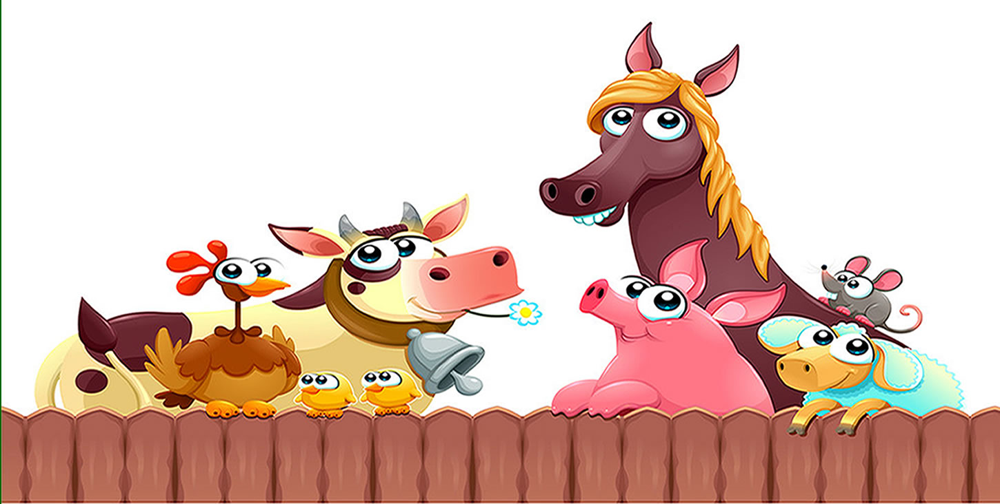

Es ser la principal plataforma en línea dedicada a la promoción del conocimiento,
la innovación y el éxito en la industria porcícola. Nos comprometemos a proporcionar a porcicultores,
veterinarios, investigadores y entusiastas de la cría de cerdos, una fuente confiable de información
